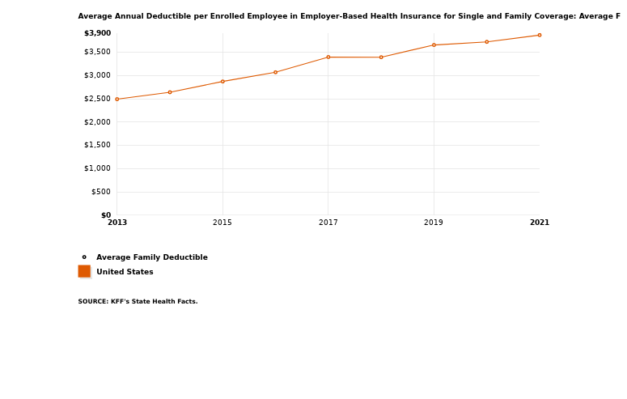
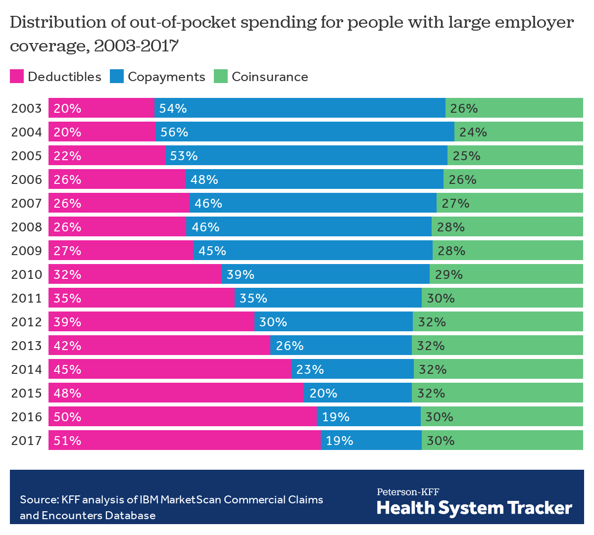

Health Insurance: A New Language
Table of contents
- Motivation
- How insurers shape coverage
- How patients pay for coverage
- Real-life example
Motivation
What is health insurance?
Why do people buy health insurance? What are they insuring?
What is health insurance?
Health insurance can still improve health by:
- improving affordability of care (by paying for some part of care when needed)
- facilitating availability of care (providers receive lower payments for “cash” patients)
Made more important due to extremely high health care prices
How does health insurance work?
- Enrollees pay the insurer
- Fixed amount per month (premium)
- Some amount for care provided (cost-sharing)
- Fixed amount per month (premium)
- Insurer pays provider
- Negotiated prices
- Pays share of bill depending on cost-sharing terms
- Negotiated prices
How does health insurance work?
- Modern health insurance is very complicated!
- Need to work through some basic terminology before we go much further
How insurers shape coverage
Managed care
- Health insurance product that encompasses some attempt to manage utilization of care
- Insurers “manage” care through the use of networks of providers
Insurance networks
Set of providers with whom the insurer has agreed to terms of payment
- PPOs: tiered network structure → patients pay less at higher-tier providers
- HMOs: discrete structure → some providers in-network, others entirely out-of-network
Benefit design
Insurers also decide:
- What services are covered
- hospital visits, prescription drugs, mental health services, etc.
- hospital visits, prescription drugs, mental health services, etc.
- What patients pay
- premium, deductible, co-payment, co-insurance
This “benefit design” sets the rules for patient payments.
How patients pay for coverage
Cost-sharing
Patient payments when care is used
- Deductible
- Co-insurance
- Co-payment
Deductible
The amount the patient must pay out-of-pocket before insurance pays anything

Copayment
A fixed dollar amount for a service (after deductible is met)
- Common for low-cost, predictable care (e.g., office visits, prescriptions)
- Example: $20 co-pay for an office visit
Coinsurance
A percentage of costs (after deductible is met)
- Example: 20% coinsurance rate on a $5,000 hospital bill
- Patient pays $1,000
- Insurer pays $4,000
- Patient pays $1,000
- Common for larger, less predictable services (hospital stays, ER visits)
Cost-sharing over time

Summary
How insurers shape coverage
- Managed care (steerage via networks)
- PPO: tiered coverage; out-of-network covered but less generous
- HMO: coverage limited to in-network providers
- Benefit design
- Covered services (e.g., hospital, prescriptions, mental health)
- Premiums and cost-sharing rules (deductible, co-payment, co-insurance)
How patients pay for coverage
- Premiums: fixed monthly payment for coverage
- When care is used
- Deductible: amount paid before insurer pays anything
- Co-payment: fixed $ per service
- Co-insurance: % of allowed amount
- Network choice matters
- In-network: negotiated allowed amounts
- Out-of-network: provider charges (often much higher)
Real-life example
- Let’s look at some real-life health insurance options and descriptions
- Emory’s health insurance plans for its employees